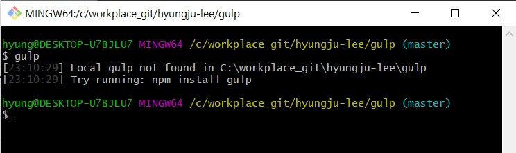
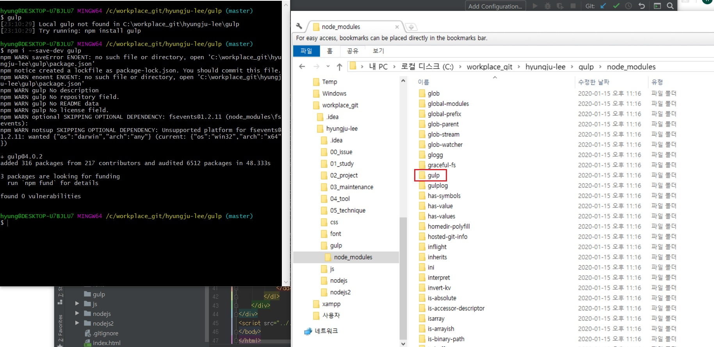
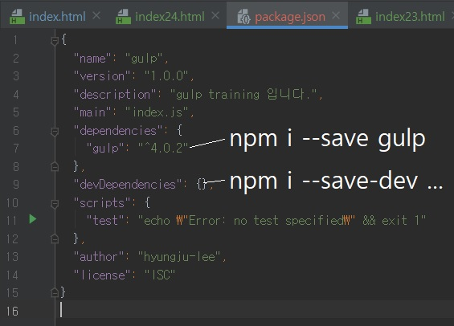

Gulp.js 프로젝트 디렉터리에 로컬 설치하기
- Gulp.js 프로젝트 디렉터리에 로컬 설치하기
-
디렉터리를 하나 생성하여 Gulp.js 사용 방법을 배워 보겠습니다.
Git Bash에서 해당 디렉터리 위치로 이동한 후 gulp 명령어를 실행합니다.
그러면 Local gulp not found 메시지가 출력되면서 현재 디렉터리에서 로컬 Gulp를 찾을 수 없다고 알려 줍니다.
즉, 현재 디렉터리에 Gulp 패키지가 설치되어 있어야만 Gulp를 사용할 수 있습니다.

- Gulp를 또 설치해야 한다고요? 그렇다면 왜 전역 설치를 한 건가요?
-
전역적으로 Gulp를 설치했다 하더라도 개별적인 프로젝트에서 Gulp를 사용하려면 로컬 설치가 필요합니다.
그럼에도 전역에 설치한 이유는 향후 인터넷이 지원되지 않는 상황에서 Gulp 설치가 필요할 수도 있기 때문입니다.
보통은 NPM에서 Gulp를 다운로드하는데, 인터넷이 연결되지 않은 환경에서는 Gulp를 다운로드할 수가 없습니다.
이때 전역에 설치한 Gulp가 있다면 해당 파일을 복사하여 사용할 수 있습니다.
로컬 설치는 npm i --save-dev gulp 명령어를 실행하여 NPM에서 Gulp 모듈 패키지를 다운로드하면 됩니다.
설치가 끝나면 프로젝트 디렉터리에 Node 모듈을 관리하는 [node_modules] 디렉터리와 그 아래 Gulp 모듈 패키지 디렉터리가 생성됩니다.
(설치 명령어에서 i는 install의 약자입니다.)

Git Bash에서 npm init 명령어를 실행한 후 질문에 대답합니다.
그러면 프로젝트 디렉터리 안에 package.json 파일이 생성됩니다.
package.json 파일을 열어 불필요한 코드는 삭제해도 됩니다.
npm init 명령어를 실행하기 전에 프로젝트 디렉터리 안에 있는 [node_modules] 디렉터리를 감지하며,
현재 프로젝트가 Gulp 모듈 패키지에 의존(Dependencies)하고 있음을 생성할 JSON 파일에 기술합니다.
- dependencies와 devDependencies 설정은 어떤 차이가 있나요?
-
모듈을 설치(npm install)할 때 "--save-dev" 명령어를 입력하면 개발할 때만 의존(devDependencies)하는 모듈로 package.json에 기술됩니다.
그러나 "--save" 명령어를 입력하면 배포할 때도 의존(dependencies)하는 모듈로 기술됩니다.
다음을 참조합니다.
(--save는 -S로, --save-dev는 -D로 줄여서 사용할 수 있습니다.)

이는 개발(Development)과 배포(Production)의 각 상황에 따른 모듈 의존성을 기술한 것으로,
개발 단계에서만 필요한 모듈을 별도로 관리한다는 의미입니다.
즉, 개발 단계에서만 필요한 모듈은 최종 배포할 때는 포함되지 않습니다.